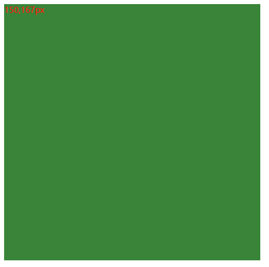

写一个div来作为鼠标区域
div中写一个span显示坐标信息
<body>
<div id="">
<span></span>
</div>
</body>给div和span增加样式并定位
<style type="text/css">
div{
position: relative;/* 定位信息 */
background-color: #398439; /* 背景颜色 */
width: 500px; /* 宽度 */
height: 500px; /* 高度 */
}
span{
position: absolute;/* 绝对定位 */
color: red; /* 文字颜色 */
}
</style>添加事件
<script type="text/javascript">
window.onload = function(){
var oDiv = document.getElementsByTagName("div")[0];//获取当元素节点
var oSpan = oDiv.children[0];
oDiv.onmousemove = function(e){ //鼠标移入事件
var evt = e || event;
var x = evt.offsetX;
var y = evt.offsetY;
oSpan.innerHTML = x + ',' + y + 'px';//显示坐标信息
}
/* 添加一个鼠标移出事件 */
oDiv.onmouseout = function(){
oSpan.innerHTML = ""; //鼠标移除后 坐标信息消失
}
}
</script>效果图
当鼠标移入的时候左上角显示坐标，移出隐藏。
